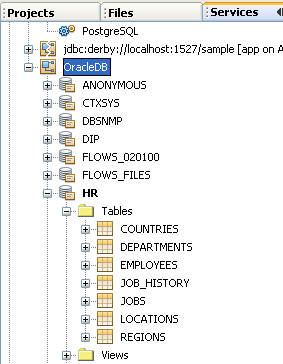
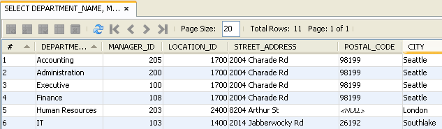

Apache NetBeans
Apache NetBeansJust released!
Estabelecendo Conexão ao Oracle Database por meio do NetBeans IDE
| This tutorial needs a review. You can open a JIRA issue, or edit it in GitHub following these contribution guidelines. |
O NetBeans IDE inclui um suporte integrado para o Oracle Database. É possível estabelecer facilmente uma conexão de dentro do IDE e começar a trabalhar com o banco de dados. Este tutorial demonstra como usar uma instalação local do Oracle Database 10_g_ Express Edition (Oracle Database XE), um banco de dados base que é gratuito para desenvolvimento, implantação e distribuição.
Este documento mostra como configurar uma conexão para a instalação local do Oracle Database XE a partir do NetBeans IDE, usar o editor SQL integrado do IDE para manipular os dados de banco de dados e como ativar a extensão PHP OCI 8 para escrever o código PHP que se conecta a um banco de dados Oracle.
Para seguir este tutorial, os recursos e softwares a seguir são necessários.
| Software ou Recurso | Versão Necessária |
|---|---|
Pacote Java EE 7.2, 7.3, 7.4, 8.0 |
|
Versão 7 ou 8 |
|
10 g Express Edition |
|
Antes de Começar
Antes de começar a percorrer este tutorial, considere o seguinte:
-
Esse tutorial demonstra como se conectar a uma instância do Oracle Database XE instalada no seu sistema local, mas as etapas também se aplicam a quando você está se conectando a uma instância remota. Se você estiver se conectando a uma instância local, você precisará efetuar download e instalar o Oracle Database XE. O processo de instalação é simples e intuitivo, mas caso haja dúvidas, consulte o Guia de Instalação do Oracle Database XE para a sua plataforma.
-
Existem duas categorias dos drivers Oracle JDBC: OCI e DJBC Thin.
-
O driver JDBC Thin da Oracle tem como base Java e é independente de plataforma. Esse driver standalone não requer a presença de outras bibliotecas Oracle e permite uma conexão direta com um Oracle Database. Este tutorial usa esse drive para mostrar como se conectar ao Oracle Database. Antes de percorrer o tutorial, você deve efetuar download do arquivo
ojdbc6.jare salvá-lo no sistema.
| O Windows pode alterar a extensão do arquivo submetido a download de .jar para .zip. Ainda assim ele permanece como um arquivo.jar. É possível renomear o arquivo para .jar. |
-
O driver OCI da Oracle usa as bibliotecas nativas de cliente da Oracle para se comunicar com os bancos de dados. Essas bibliotecas são obtidas como parte do Oracle Instant Client. Mesmo que o driver Thin seja o suficiente na maioria dos casos, você pode desejar usar o driver OCI seguindo as seguintes etapas em Usando o Driver OCI JDBC com o NetBeans IDE. Um bom exemplo do uso do driver OCI é acessar um banco de dados Oracle remoto de uma aplicação PHP usando as bibliotecas do Oracle Instant Client. Consulte a seção OCI 8 e o NetBeans IDE para PHP neste tutorial para obter informações de como ativar a extensão OCI8 para PHP.
-
Se você nunca usou o Oracle Database XE, acesse o Tutorial de Introdução do Oracle Database XE.
| A página do Oracle Database XE, que é usada para administrar o banco de dados, usa a porta 8080 por default. O Oracle GlassFish Application Server também usa a porta 8080 por default. Se os dois programas forem executados ao mesmo tempo, o Oracle Database XE bloqueará os browsers de acessarem o GlassFish em localhost:8080. Todas as aplicações implantadas no GlassFish retornarão 404, nesse caso. A solução simples é fechar o Oracle Database XE, caso não precise dele ao executar o GlassFish. Caso precise executar ambos ao mesmo tempo, altere a porta default que o Oracle Database XE usa. Isso é mais fácil do que alterar a porta default do GlassFish. Existem várias instruções na Internet sobre como mudar a porta default do Oracle Database XE, inclusive nos Fóruns da Oracle. |
Estabelecendo uma Conexão com o Oracle Database
Neste exercício, você testará e criará uma nova conexão com o banco de dados.
-
Inicie o Oracle database.
-
Abra a janela Serviços (Janela > Serviços ou Ctrl-5;⌘-5 no Mac). Na janela Serviços, clique com o botão direito do mouse no nó Bancos de Dados e escolha Nova Conexão.

-
No assistente Nova Conexão, selecione Oracle Thin na lista drop-down Driver.
-
Clique em Adicionar e encontre o arquivo
ojdbc6.jarque foi submetido a download anteriormente. Clique em Próximo. -
No painel Personalizar Conexão do assistente, insira os seguintes valores e clique em Próximo.
Nome |
Valor |
Nome do Driver |
Oracle Thin (com ID de Serviço - SID) |
Host |
|
Porta |
1521 (default) |
ID do Serviço (SID) |
|
Nome do usuário |
Indique o nome do usuário.
Para os fins do nosso tutorial, insira |
Password |
Insira a senha para o nome de usuário selecionado. |
-
Clique em Testar Conexão para confirmar que o IDE pode se conectar ao banco de dados. Clique em Próximo.
Se a tentativa obtiver êxito, a mensagem "Conexão com êxito" será exibida no assistente.

-
Selecione
HRna lista drop-down Selecionar Esquema. Clique em Finalizar.
| É necessário desbloquear o esquema HR antes de poder acessá-lo no NetBeans. O desbloqueio do banco de dados HR é descrito no Tutorial de Introdução do Oracle Database XE. |
Uma nova conexão aparecerá no nó dos Bancos de Dados na janela Serviços. É possível expandi-la e começar a navegar a estrutura do objeto do banco de dados. Altere o nome de exibição do nó de conexão: selecione Propriedades no menu pop-up do nó e clique no botão de elipses para acessar a propriedade Nome de Exibição. Digite Oracle DB como o Nome de Exibição e clique em OK.

Embora as etapas acima demonstrem o exemplo de estabelecer conexão a uma instância do banco de dados local, as etapas para estabelecer conexão com um banco de dados remoto são iguais. A única diferença é que em vez de especificar o localhost como um nome de host, é necessário inserir o endereço IP ou nome de host da máquina remota onde o Oracle Database está instalado.
|
Manipulando os Dados no Oracle Database
Uma forma comum de interagir com bancos de dados executando comandos em um editor SQL ou usando interfaces de gerenciamento de banco de dados. Por exemplo, o Oracle Database XE tem uma interface com base em browser pela é possível administrar o banco de dados, gerenciar objetos de banco de dados e manipular dados.
Mesmo que você possa executar a maioria das tarefas relacionadas com o banco de dados através da interface de gerenciamento do Oracle Database, neste tutorial, nós demonstramos como o Editor SQL no NetBeans IDE pode ser usado para executar algumas dessas tarefas. Os seguintes exercícios demonstram como criar um novo usuário, recriar uma tabela rapidamente e copiar os dados da tabela.
Criando um Usuário
Vamos criar uma nova conta de usuário de banco de dados para manipular tabelas e dados no banco de dados. Para criar um novo usuário, você precisa estar conectado em uma conta de administrador de banco de dados, no nosso caso, a conta default system criada durante a instalação do banco de dados.
-
Na janela Serviços, clique com o botão direito no nó de conexão OracleDB e selecione Executar Comando. É aberto o editor de SQL do NetBeans IDE, no qual é possível inserir comandos SQL que serão enviados ao banco de dados.

-
Para criar um novo usuário, insira o seguinte comando na janela Editor SQL e clique no botão Executar SQL na barra de ferramentas.

create user jim identified by mypassword default tablespace users temporary tablespace temp quota unlimited on users;Esse comando cria um novo usuário jim com a senha mypassword . O tablespace default é users e o espaço alocado é ilimitado.
-
A próxima etapa é conceder privilégios à conta de usuário
jimpara executar ações no banco de dados. Precisamos permitir que o usuário se conecte ao banco de dados, crie e modifique tabelas no espaço de tabela default do usuário e acesse a tabelaEmployeesna amostra do banco de dadoshr.
Em um contexto real, um administrador de banco de dados cria atribuições personalizadas e privilégios de ajuste para cada atribuição. No entanto, para o propósito do nosso tutorial, podemos usar uma atribuição predefinida, como CONNECT . Para obter mais informações sobre atribuições e privilégios, consulte o Oracle Database Security Guide.
grant connect to jim;
grant create table to jim;
grant select on hr.departments to jim;Tablespaces no Oracle Databases
Um tablespace é uma unidade de armazenamento do banco de dados lógico de qualquer banco de dados Oracle. Na realidade, todos os dados do banco de dados são armazenados em tablespaces. Você cria tabelas dentro de espaços de tabela alocados. Se um espaço de tabela default não for explicitamente designado a um usuário, o tablespace do sistema é usado por default (é melhor evitar essa situação)
Para obter mais informações sobre o conceito de espaço de tabela, consulte FAQ da Oracle: Tablespace
Criando uma Tabela
Existem diversas maneiras de criar uma tabela no banco de dados usando o NetBeans IDE. Por exemplo, é possível executar um arquivo SQL (clique com o botão direito do mouse no arquivo e selecione Executar Arquivo), executar um Comando SQL (clique com o botão direito do mouse no nó de conexão e selecione Executar Comando) ou usar a caixa de diálogo Criar Tabela (clique com o botão direito do mouse no nó Tabelas e selecione Criar Tabela). Neste exercício, você recriará uma tabela usando a estrutura de outra tabela.
Neste exemplo, se você deseja que o usuário jim crie uma cópia da tabela Departamentos em seu esquema ao recriar a tabela no banco de dados hr . Antes de criar a tabela você precisa se desconectar do servidor e efetuar log-in como o usuário jim .
-
Clique com o botão direito do mouse no modo de conexão
OracleDBna janela Serviços e selecione Desconectar. -
Clique com o botão direito do mouse no nó de conexão
OracleDBe selecione Conectar e efetue log-in comojim. -
Expanda o nó Tabelas no esquema HR e confirme que somente a tabela
Departamentosestá acessível ao usuáriojim.
Quando o usuário jim foi criado, o privilégio Selecionar foi limitado à tabela Departamentos .

-
Clique com o botão direito do mouse no nó da tabela
Departamentose selecione Obter Estrutura. Salve o arquivo.grabno disco. -
Expanda o esquema
JIM, clique com o botão direito do mouse no nóTabelase escolha Recriar Tabela. Aponte para o arquivo.grabque você criou.

-
Revise o documento SQL que será usado para criar a tabela. Clique em OK.

Quando você clica em OK, a nova tabela DEPARTAMENTOS é criada e aparece sob o nó do esquema JIM . Se clicar com o botão direito do mouse no nó da tabela e selecionar Exibir Dados, você verá que a tabela está vazia.
Se você deseja copiar os dados da tabela Departamentos original para a nova tabela, é possível inserir os dados manualmente no editor de tabela ou executar um script SQL na nova tabela para preencher a tabela.
Para inserir os dados manualmente, execute as seguintes etapas.
-
Clique com o botão direito do mouse na tabela
DEPARTAMENTOSno esquemaJIMe selecione Exibir Dados. -
Clique no ícone Inserir Registros na barra de ferramentas Exibir Dados e abra a janela Inserir Registro.

-
Digite nos campos para inserir os dados. Clique em OK.
Por exemplo, é possível inserir os seguintes valores retirados da tabela DEPARTAMENTOS original.
| Coluna | Valor |
|---|---|
DEPARTMENT_ID |
10 |
DEPARTMENT_NAME |
Administração |
MANAGER_ID |
200 |
LOCATION_ID |
1700 |
Para preencher a tabela usando um script SQL, execute as seguintes etapas.
-
Clique com o botão direito do mouse na tabela
DEPARTAMENTOSno esquemaJIMe selecione Executar Comando. -
Insira o script na guia Comando SQL. Clique no botão Executar na barra de ferramentas.
O seguinte script preencherá a primeira linha da nova tabela com os dados da tabela original.
INSERT INTO JIM.DEPARTMENTS (DEPARTMENT_ID, DEPARTMENT_NAME, MANAGER_ID, LOCATION_ID) VALUES (10, 'Administration', 200, 1700);É possível recuperar o script SQL para preencher a tabela a partir da tabela original executando as etapas a seguir.
-
Clique com o botão direito do mouse na tabela
DEPARTAMENTOSno esquemaHRe selecione Exibir Dados. -
Selecione todas as linhas na janela Exibir Dados e clique com o botão direito do mouse na tabela e selecione Mostrar Script SQL para INSERT no menu pop-up para abrir a caixa de diálogo Exibir SQL que contém o script.
É possível então copiar o script e modificá-lo, conforme necessário para inserir os dados na sua tabela.
Consulte Dicas para obter mais informações sobre como trabalhar no Editor SQL.
Trabalhando com os Dados da Tabela
Para trabalhar com dados da tabela, você pode usar o Editor SQL no NetBeans IDE. Ao executar consultas SQL, você pode adicionar, modificar e deletar dados mantidos em estruturas de bancos de dados.
Inicialmente, crie uma segunda tabela chamada Localizações no esquema jim (mantenha-se conectado com a conta de usuário do jim). Desta vez, simplesmente executaremos o arquivo SQL pronto no IDE:
-
Faça o download e salve o arquivo locations.sql no diretório USER_HOME do seu computador.
-
Abra a janela Favoritos do IDE e localize o arquivo
locations.sql.
Para abrir a janela Favoritos, clique em Janela > Favoritos no menu principal (pressione Ctrl-3). O diretório USER_HOME está listado na janela Favoritos por default.
-
Clique com o botão direito do mouse no arquivo
locations.sqle selecione Executar Arquivo.

| Se mais de uma conexão de banco de dados estiver registrada no IDE, o IDE pode solicitar que você selecionar a conexão correta. |
-
Na janela Serviços, clique com o botão direito no nó Tabelas e selecione Atualizar no menu pop-up.
É possível ver que a tabela Localizações com os dados foi adicionada ao esquema JIM .

-
Clique com o botão direito do mouse no nó da tabela Localizações e selecione Exibir Dados para ver o conteúdo da tabela. Você verá o conteúdo da tabela Localizações. É possível inserir novos registros e modificar os dados existentes diretamente nessa janela.

-
Em seguida, executamos uma consulta para exibir informações de duas tabelas: Departamentos e Localizações.
No nosso caso, usaremos uma “junção natural” simples, pois ambas tabelas têm a mesma coluna “location_id” que guarda valores do mesmo tipo de dados. Essa junção seleciona somente as linhas que possuem valores iguais na coluna location_id correspondente.
Abra a janela Comando SQL (clique com o botão direito do mouse no nó Tabelas no esquema JIM e selecione Executar Comando), insira a seguinte Instrução SQL e clique no ícone Executar SQL.
SELECT DEPARTMENT_NAME, MANAGER_ID, LOCATION_ID, STREET_ADDRESS, POSTAL_CODE, CITY, STATE_PROVINCE
FROM departments NATURAL JOIN locations
ORDER by DEPARTMENT_NAME;Essa consulta SQL retorna as linhas da tabela Departamentos da qual os valores de location_id são iguais aos valores na coluna correspondente da tabela Localizações, com os resultados sendo perdidos pelo nome do departamento. Observe que não é possível inserir novos registros diretamente nos resultados dessa consulta, como poderia ser feito na representação de uma tabela única.

É possível salvar a consulta de junção SQL como uma View (clique com o botão direito do mouse no nó View e selecione Criar View) e execute quando desejar. Para isso, o usuário do banco de dados deve ter o privilégio concedido de Criar View, o que nosso usuário do exemplo não tem. É possível efetuar log-in na conta do sistema, conceder ao jim o privilégio de Criar Exibição (com a instrução SQL: “grant create view to jim;”) e tentar criar sua própria exibição.
Dicas para trabalhar no Editor SQL do NetBeans IDE
Se você está acompanhando este tutorial, você já usou os recursos do Editor SQL do NetBeans IDE. Nós listamos aqui várias outros recursos do Editor SQL do NetBeans IDE que podem ser úteis a você.
-
View da GUI das Tabelas de Bancos de Dados. Quando você clica com o botão direito do mouse em um nó de tabela na janela Serviços e seleciona Exibir Dados, o IDE exibe uma representação visual da tabela e de seus dados (como mostrado na figura acima). Também é possível adicionar, modificar e deletar dados da tabela diretamente dessa view.
-
Para adicionar um registro, clique no ícone Inserir Registros
 e insira novos dados na janela Inserir Registros que é aberta. Clique no botão Exibir SQL para ver o código SQL para essa operação. A tabela será atualizada automaticamente com os novos registros.
e insira novos dados na janela Inserir Registros que é aberta. Clique no botão Exibir SQL para ver o código SQL para essa operação. A tabela será atualizada automaticamente com os novos registros. -
Para modificar um registro, clique duas vezes diretamente dentro de qualquer célula na View da GUI de uma tabela e digite o novo valor. Até que a modificação seja confirmada, o texto modificado é mostrado em verde. Para confirmar suas alterações, clique no ícone Confirmar Alterações
 . Para cancelar as alterações, clique no ícone Cancelar Edições .
. Para cancelar as alterações, clique no ícone Cancelar Edições . -
Para deletar uma linha, selecione-a e clique no ícone Deletar Registros Selecionados
.
-
-
Manter Guias Anteriores. Clique no ícone Manter Guias Anteriores na barra de ferramentas do Editor de SQL para manter as janelas com os resultados de consultas anteriores abertas. Isso pode ser útil caso deseje comparar os resultados de várias consultas.
-
Histórico SQL (Ctrl-Alt-Shift-H). Usar o ícone do Histórico SQL
 na barra de ferramentas do Editor de SQL para exibir todas as instruções SQL que você executou para cada uma das conexões de banco de dados. Escolha a conexão na lista drop-down, encontre a instrução SQL que você precisa e clique em Inserir para colocar a instrução na janela Comando SQL.
na barra de ferramentas do Editor de SQL para exibir todas as instruções SQL que você executou para cada uma das conexões de banco de dados. Escolha a conexão na lista drop-down, encontre a instrução SQL que você precisa e clique em Inserir para colocar a instrução na janela Comando SQL.
-
Lista de conexões. Se você tem muitas conexões aos bancos de dados e precisa alternar rapidamente entre eles no Editor SQL, use a lista drop-down Conexões.
-
Executar Instruções SQL. Para executar a instrução inteira que está atualmente na janela de Comando SQL, clique no ícone Executar SQL
 . Se você desejar executar somente uma parte do SQL, selecione-a na janela Comando SQL, clique com o botão direito do mouse na seleção e selecione Executar Seleção. Nesse caso, somente a parte selecionada será executada.
. Se você desejar executar somente uma parte do SQL, selecione-a na janela Comando SQL, clique com o botão direito do mouse na seleção e selecione Executar Seleção. Nesse caso, somente a parte selecionada será executada.
OCI 8 e o NetBeans IDE para PHP
É possível usar a extensão PHP OCI 8 e o NetBeans IDE para PHP para escrever o código PHP que se comunica com um banco de dados Oracle. Para usar o NetBeans IDE para PHP e um banco de dados Oracle:
-
Configure o ambiente PHP como descrito na seção Configurando Seu Ambiente para Desenvolvimento em PHP da Trilha de Aprendizado do PHP. Observe que o NetBeans IDE suporta somente PHP 5.2 ou 5.3.
-
Abra seu arquivo
php.iniem um editor. Certifique-se de que a propriedadeextension_diresteja definida para o diretório de extensões PHP. Normalmente, esse diretório éPHP_HOME/ext. Por exemplo, com o PHP 5.2.9 instalado no diretório-raiz doC:, a definiçãoextension_dirdeveria serextension_dir="C:\php-5.2.9\ext". -
Localize e remova o comentário da linha
extension=php_oci8_11g.dll(para Oracle 11g) ouextension=php_oci8.dll(para Oracle 10.2 ou XE). Somente uma dessas extensões pode ser ativada por vez.
*Importante: *Se não houver tal linha no php.ini , procure na pasta de extensões pelo arquivo de extensão OCI 8. Se não houver o arquivo de extensão OCI 8 na pasta de extensões, consulte Instalando PHP e o Oracle Instant Client para Linux e Windows para obter mais informações sobre o download e a instalação do OCI 8.
-
Reinicie o Apache. (Usuários do Windows devem reiniciar seus computadores.)
-
Executar
phpinfo(). Se você ativou a extensão OCI 8 com êxito, uma seção da OCI 8 aparecerá na saída dephpinfo().
Para obter mais informações sobre como ativar a OCI 8, e especialmente para usá-la com um servidor Oracle DB, consulte Instalando PHP e o Oracle Instant Client para Linux e Windows.
Quando a OCI 8 está ativada, o NetBeans IDE para PHP acessa essa extensão para autocompletar código e depuração de erros.

Usando o Driver OCI JDBC com o NetBeans IDE
Os pacotes do driver OCI estão disponíveis no mesmo arquivo JAR que o do driver JDBC Thin ( ojdbc6.jar ). A seleção e qual driver usar depende da interface: oracle.jdbc.OracleDriver para o driver Thin e oracle.jdbc.driver.OracleDriver para o driver OCI. Para usar o driver OCI, você deve instalar o Oracle Database Instant Client, pois ele contém todas as bibliotecas exigidas pelo driver OCI para se comunicar com o banco de dados.
Para estabelecer conexão com o Oracle Database com o uso do NetBeans IDE usando o driver OCI da Oracle:
-
Efetue download do pacote “Basic” do Oracle Database Instant Client para a sua plataforma. Siga as instruções de instalação desta página.
-
Na janela Serviços do IDE, clique com o botão direito do mouse no nó Bancos de Dados e selecione Nova Conexão.
-
Na etapa Localizar Driver, selecione Oracle OCI, clique em Adicionar e especifique o arquivo
ojdbc6.jar. -
Na caixa de diálogo Personalizar Conexão, forneça os detalhes da conexão: endereço IP, porta, SID, nome de usuário e senha. Observe a diferença no URL da JDBC para os drivers OCI e Thin.

Solução de Problemas
As dicas de diagnóstico e solução de problemas abaixo descrevem somente algumas exceções que foram encontradas. Se a sua pergunta não foi respondida aqui, faça sua própria pesquisa ou use Enviar Feedback no link Este Tutoria para fornecer feedback construtivo.
-
Você verá o erro parecido com o seguinte:
Shutting down v3 due to startup exception : No free port within range:
>> 8080=com.sun.enterprise.v3.services.impl.monitor.MonitorableSelectorHandler@7dedadIsso acontece devido ao servidor de aplicações GlassFish e o Oracle Database usarem a porta 8080. Então, caso deseje usar ambas aplicações ao mesmo tempo, será necessário trocar essa porta default de um deles. Para redefinir a porta default do Oracle Database, use o seguinte comando:
CONNECT SYSTEM/passwordEXEC DBMS_XDB.SETHTTPPORT(<new port number>);-
Você recebe o seguinte erro:
Listener refused the connection with the following error: ORA-12505, TNS:listener does not currently know of SID given in connect descriptor.Isso ocorre quando o ID do serviço (SID) da instância do banco de dados fornecida pelo descritor de conexão é conhecido como listener. Existem algumas causas para essa exceção. Por exemplo, ela pode ocorrer se o Oracle Database não tiver sido iniciado (caso mais simples). Ou o SID está incorreto ou não é conhecido pelo listener. Se você usa um SID default (por exemplo, para o Oracle Database Express Edition, o SID default é XE), esse problema provavelmente não aparecerá. O SID está incluído nas partes de CONNECT DATA no arquivo tnsnames.ora (em uma máquina Windows, o arquivo está em %ORACLE_HOME%\network\admin\tnsnames.ora ).
* Você recebe o seguinte erro:
ORA-12705: Cannot access NLS data files or invalid environment specified.De forma geral, isso significa que a variável de ambiente NLS_LANG contém um valor inválido para idioma, território ou conjunto de caracteres. Se esse for o caso, a configuração inválida de NLS_LANG deveria ser desativada no nível do seu sistema operacional. Para Windows, renomeie a subchave de NLS_LANG no registro do Windows em \HKEY_LOCAL_MACHINE\SOFTWARE\ORACLE. Para Linux/Unix, execute o comando “unset NLS_LANG”.
Consulte Também
Para obter mais informações sobre como administrar e trabalhar com o Oracle Database, consulte a documentação correspondente da Oracle. Abaixo, fornecemos uma breve lista das documentações comumente usadas.
-
Referência SQL do Oracle Database. A descrição completa das instruções SQL usadas para manipular informações no Oracle Database.
-
Oracle Database Security Guide. Fornece e explica conceitos importantes usados no gerenciamento de um Oracle Database.
-
Tutorial do Oracle Database 10_g_ Express Edition. Uma rápida, mas detalhada, introdução ao uso do Oracle Database XE.
-
Instalando PHP e o Oracle Instant Client para Linux e Windows. Um artigo direto de passo a passo sobre a instalação do PHP e o Oracle Instant Client.
Para obter mais informações sobre como trabalhar com outros bancos de dados no NetBeans IDE, consulte